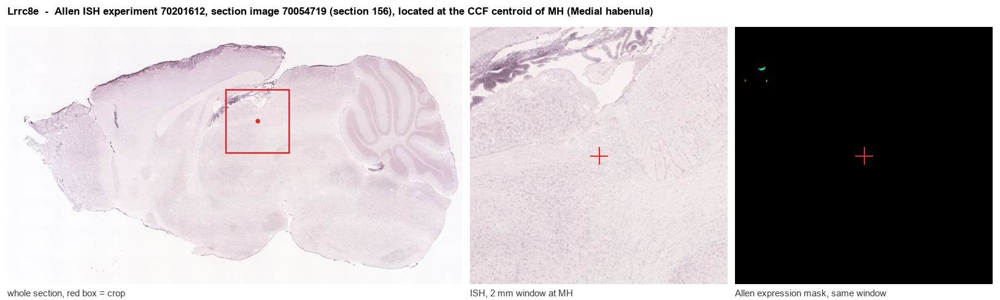

Lrrc8e
Volume-regulated anion channel subunit LRRC8E (Leucine-rich repeat-containing protein 8E)
Spatial tier: STRICT_EXCLUSIVE · Class: ION_CHANNEL · Top region: MH (Medial habenula) · Positive regions: 8/554
45.5Discovery Score
36.2Targetability Score
CEvidence grade C
What this means: Lrrc8e: predicted fine-region profile is strict-exclusive, with 8 positive regions out of 554 (limit 12); direct spatial validation is required.
Function in MH: evidence, prediction, innovation
- Gene function
- LRRC8E is one of the five subunits that assemble into the volume-regulated anion channel (VRAC). VRAC opens when a cell swells and lets chloride and organic osmolytes such as taurine and glutamate leave, restoring cell volume; the subunit composition determines what the channel conducts. LRRC8E-containing channels are strongly activated by oxidation and, in LRRC8-containing complexes, can pass immune second messengers such as cGAMP.
- Region function
- The medial habenula is an epithalamic relay whose cholinergic/substance P neurons project almost exclusively through the fasciculus retroflexus to the interpeduncular nucleus. This MHb-IPN axis sets nicotine aversion and withdrawal, fear memory expression, anxiety and negative affect.
- Published in this region
- inferred No region-specific literature found. The closest related findings are biophysical: Gradogna et al. 2017 and Bertelli et al. 2022 (both J Physiol) showed that LRRC8E confers strong oxidation sensitivity on VRAC currents in heterologous cells, and Zhou et al. 2020 (Immunity) showed LRRC8 channels transfer cGAMP between cells, but none of this work touches brain or habenula.
- Predicted function
- Prediction: an LRRC8E-containing VRAC in MHb would act as a redox- and swelling-gated efflux pathway for chloride and glutamate. Given the depolarised chloride reversal potential of MHb neurons, opening it would be depolarising, making LRRC8E a plausible link between metabolic or oxidative stress and increased habenular output. Knockout should blunt swelling- and oxidation-evoked currents in MHb neurons and reduce stress-induced habenular hyperactivity; DCPIB should reproduce this acutely.
- Innovation
- ★★★★★ 5/5 LRRC8E has no published neuronal literature at all, so any MHb finding would be first-in-field, though the lack of subunit-selective drugs makes it harder.
- Tools
- Lrrc8e knockout mice from the Jentsch laboratory; VRAC blocker DCPIB and carbenoxolone; hypotonic challenge and oxidising agents (chloramine-T, H2O2) as functional assays; no LRRC8E-selective antibody or ligand.
- References
Direct evidence located at the region

Allen ISH experiment 70201612, section image 70054719 (section 156): the section that contains the CCF centroid of Medial habenula according to the Allen image-to-atlas alignment (reference_to_image), with a 2 mm window around that point. Left: whole section, red box = window. Middle: ISH signal. Right: Allen's expression-mask view of the same window. open this image in the Allen viewer
Look it up yourself: Allen Mouse Brain ISH for Lrrc8eAllen reference atlas: MH (structure 483)ABC Atlas MERFISH viewer(in the ABC Atlas choose dataset MERFISH-C57BL6J-638850-CCF, colour cells by gene "Lrrc8e" or by parcellation_substructure "MH")All genes confined to MH + 3-D brain
Direct spatial evidence
MERFISH REGION LOCATOR

DIRECT ALLEN ISH

DIRECT ALLEN ISH

Regional expression figure

Predicted WMB × fine-CCF profile; not direct full-transcriptome spatial measurement.
Spatial profile
Evidence and specificity
- Evidence status
- PREDICTED_FINE
- Direct sources
- None; predicted localization only
- Exclusive threshold
- 12 positive regions out of 554
- Spatial specificity
- 0.347
- Top-region fraction
- 0.125
- Filter status
- PASS
Interpretation limits
- Cell-type-to-region projection is imputed expression, not direct spatial measurement.
- Adult reference atlases do not establish stability across age, sex, strain, state, or disease.
- Transcript abundance does not guarantee protein abundance or genetic-tool performance.